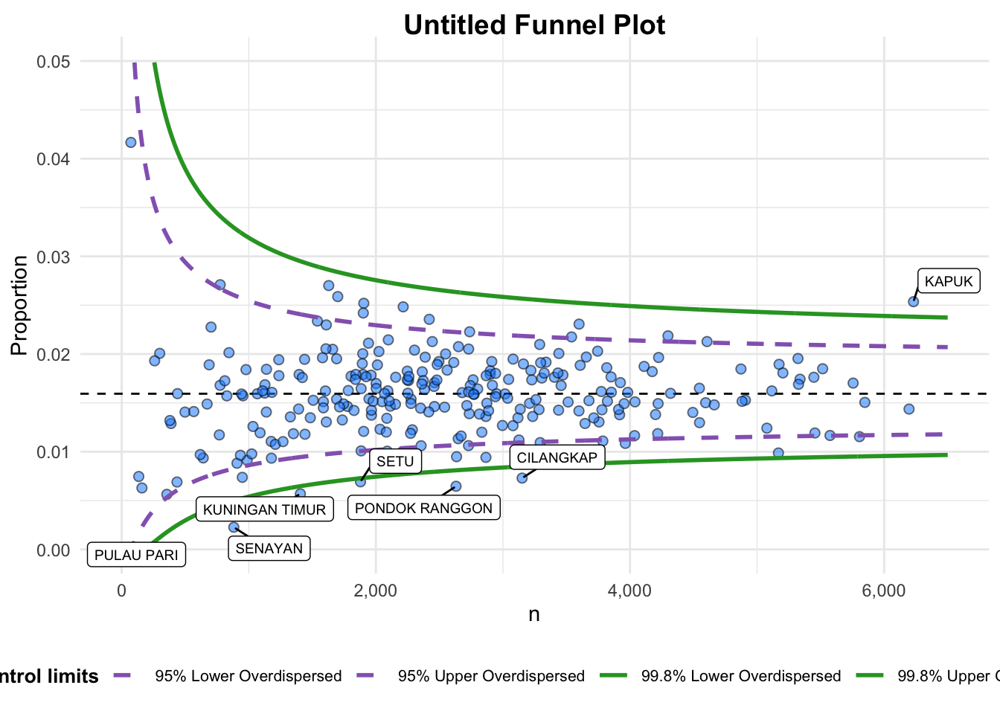

pacman::p_load(tidyverse, FunnelPlotR, plotly, knitr)Hands on Exercise 4 - Part 3
Objectives
To learn about Funnel plots which is a specially designed data visualisation for conducting unbiased comparison between outlets, stores or business entities.
Installing & running the packages
Importing the dat
covid19 <- read_csv("data/COVID-19_DKI_Jakarta.csv") %>%
mutate_if(is.character, as.factor)FunnelPlotR methods
FunnelPlotR package uses ggplot to generate funnel plots. It requires a numerator (events of interest), denominator (population to be considered) and group. The key arguments selected for customisation are:
limit: plot limits (95 or 99).label_outliers: to label outliers (true or false).Poisson_limits: to add Poisson limits to the plot.OD_adjust: to add overdispersed limits to the plot.xrangeandyrange: to specify the range to display for axes, acts like a zoom function.Other aesthetic components such as graph title, axis labels etc.
Basic plot with FunnelPlotR
funnel_plot(
.data = covid19,
numerator = `Positive`,
denominator = `Death`,
group = `Sub-district`
)A funnel plot object with 267 points of which 0 are outliers.
Plot is adjusted for overdispersion. Things to learn from the code chunk above.
groupin this function is different from the scatterplot. Here, it defines the level of the points to be plotted i.e. Sub-district, District or City. If Cityc is chosen, there are only six data points.By default,
data_typeargument is “SR”.limit: Plot limits, accepted values are: 95 or 99, corresponding to 95% or 99.8% quantiles of the distribution.
FunnelPlotR methods: Makeover 1
funnel_plot(
.data = covid19,
numerator = `Death`,
denominator = `Positive`,
group = `Sub-district`,
data_type = "PR", #<<
x_range = c(0, 6500), #<<
y_range = c(0, 0.05) #<<
)
A funnel plot object with 267 points of which 7 are outliers.
Plot is adjusted for overdispersion. FunnelPlotR method: Makeover 2
funnel_plot(
.data = covid19,
numerator = `Death`,
denominator = `Positive`,
group = `Sub-district`,
data_type = "PR",
x_range = c(0, 6500),
y_range = c(0, 0.05),
label = NA,
title = "Cumulative COVID-19 Fatality Rate by Cumulative Total Number of COVID-19 Positive Cases", #<<
x_label = "Cumulative COVID-19 Positive Cases", #<<
y_label = "Cumulative Fatality Rate" #<<
) A funnel plot object with 267 points of which 7 are outliers.
Plot is adjusted for overdispersion. Things to learn from the code chunk above.
label = NAargument is to removed the default label outliers feature.titleargument is used to add plot title.x_labelandy_labelarguments are used to add/edit x-axis and y-axis titles.
Funnel Plot for Fair Visual Comparison: ggplot2 method
Computing the basic derived fields
To plot the funnel plot from scratch, we need to derive cumulative death rate and standard error of cumulative death rate.
df <- covid19 %>%
mutate(rate = Death / Positive) %>%
mutate(rate.se = sqrt((rate*(1-rate)) / (Positive))) %>%
filter(rate > 0)